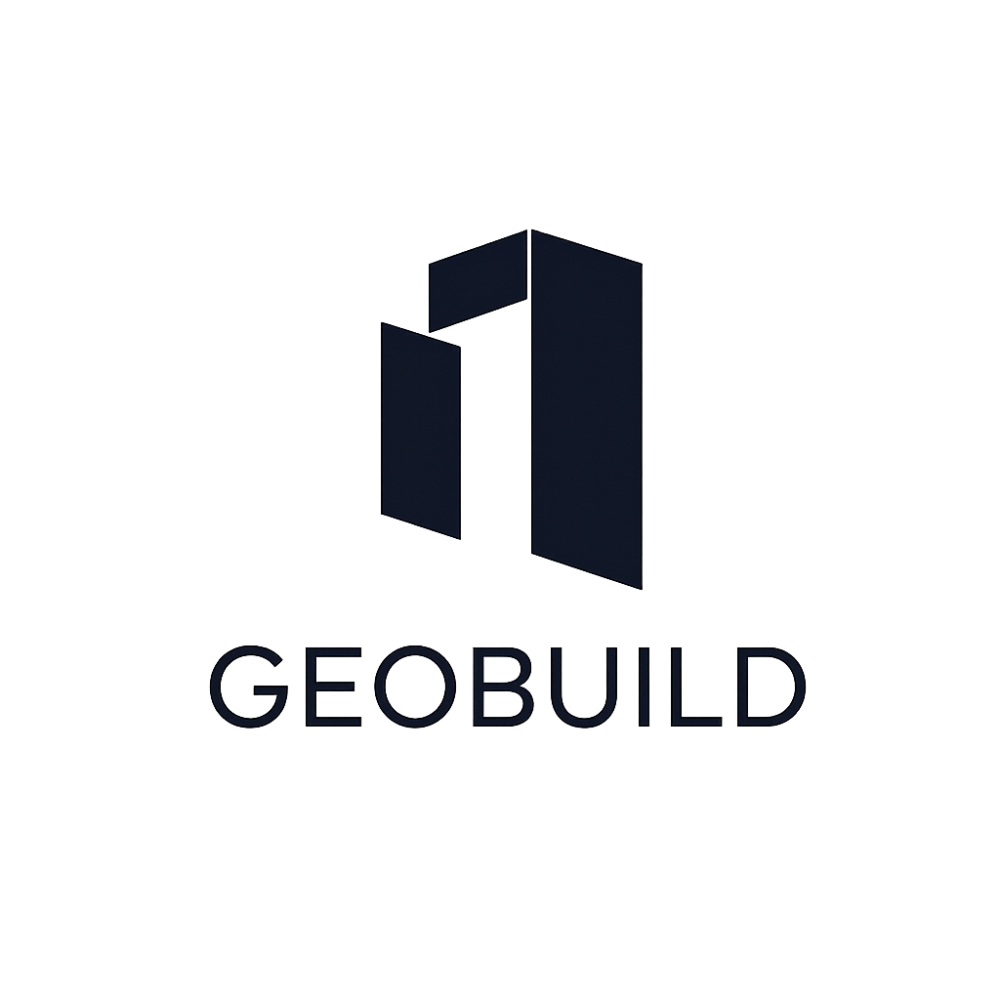

GeoBuild S.A.
Inicio
Gestión de Personal
Gestión Vehicular
Centro de Monitoreo
Cerrar Sesion
Centro de Monitoreo de Flotas
0
Conductores activos
0
Vehículos en ruta
--:--
Hora actual
Actualizar datos
Centrar mapa
Conductores Activos